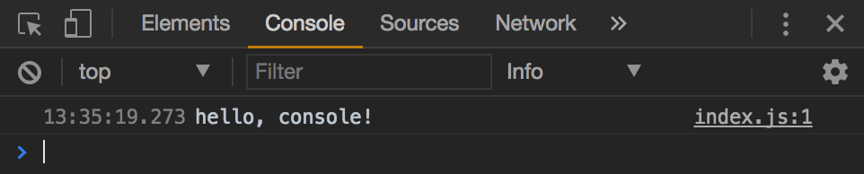

But I Don't Wanna: Part 1
Jul 11, 2017 13:55 · 497 words · 3 minutes read
Part One: Getting Started
First Things First: Everything’s Gonna Be Just Fine
Hey, remember when ES6 first started coming on the scene and you were like:

It started gaining traction, new libraries were being written in it, yet still you were like:

Then friends, family, co-workers, and YouTube subscribers all started using it, and yet…

It’s ok, little bird. I’m gonna tell you a secret:
The most commonly used ES6 features are little more than shorthand syntax for the language you already know and love. And guess what? You don’t even have to use them.
That’s right… ES6 is fully backwards-compatible with ES5. You can use as many or as few of the new features as you want.
I suggest that you incorporate as many of the new features as possible for one simple reason: ES6 is faster to write than its ES5 forefather.
By the end of this guide, you’ll take your js skills from this:

to this:

But wait…
However, there are two small things we have to talk about first:
- Dependency Management
- Cross-Browser Compatibility
I know I lost some readers with that tiny list alone. It’s ok, the sound of their exasperation only fuels my resolve. Luckily, there are a number of tools available to mitigate each or both of these problems. The most common tool in use today is Babel. However, Babel has a somewhat complicated setup and, as this book is about how to write ES6, and not how to create the best environment and toolchain, we’re gonna take a short cut.
0-to-100: Real Quick
Three B’s: Babel, Browserify & Budo
- Babel: An ES6 transpiler
- Browserify: A pluggable dependency bundler
- Budo: A local server that runs browserify on your code everytime you save it
We’ll go into more depth about what these do later… but for now, clone the quickstart repo I’ve created and install the package dependencies:
$ git clone https://github.com/8-uh/es6-budo.git
$ cd es6-budo
$ npm install
Once the install has finished running, open the directory in your favorite text editor (I suggest Atom). You should see a directory structure like:
├── src
│ └── index.js
├── .babelrc
├── .gitignore
├── bundle.js
├── index.html
├── package.json
└── sakura.css
Now… jump back to your terminal and type:
$ npm start
Your browser should automatically open and you will be presented with a page that looks like:
Open your devtools console (assuming you’re using chrome… which you should be… press

Next, jump back to your editor and change the line of code in index.js to:
console.log('hello, console?')
and save.
If you glance back at your browser’s console, you’ll see that the output has changed. No need to refresh! But even more importantly… you can now write cross-browser compatible ES6 code.
That’s the power of Babel, Browserify, and Budo working for you.
Ten dollars says you’re looking at the screen like:
 “I don’t see the difference.”
“I don’t see the difference.”
And, if you’ll just hold your horses, I’ll show you…
In part two.